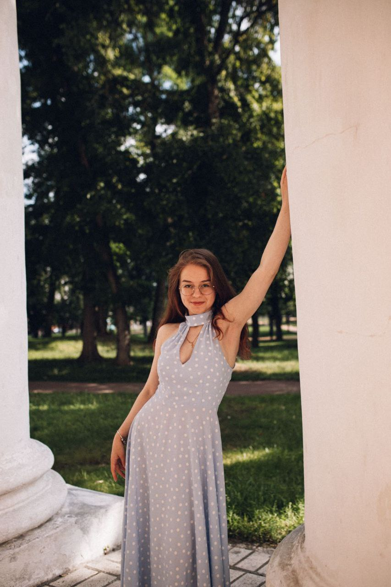

ПОЛІНА ПРОКОПЕНКО
BIOMEDICINE • ORTHOPEDICS • TECHNOLOGY

Про мене

Привіт! Мене звати Поліна, мені 19 років. Я студентка 2-го курсу факультету ФБМІ Київського політехнічного інституту імені Ігоря Сікорського, спеціальність – Комп'ютерні науки. Мене завжди цікавила комбінація медицини, ортопедії та технологій.
Навички
- HTML
- Python
- C++
- Аналіз біомедичних даних
- Біомеханіка
- Молекулярна біологія
- Травматологія
- Ортопедія
Проєкти

Допомога з релаксацією

Натхнення

На створення дизайну для веб-сторінки мене надихнула атмосфера Lore Olympus, де поєднуються емоції, мистецтво і сучасний погляд на міфологію.
Переглянути →